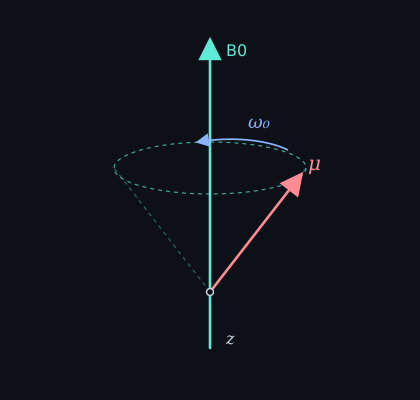

Continues the 2021 class note. Last term was gyromagnetic ratio: μ = γI.
Put μ in a static field B0. The torque is μ × B0. If μ were only a compass needle, it would flop onto B0. It does not, because it also carries angular momentum. Torque on angular momentum does not pull the axis in. It makes the axis walk around the field. That walk is Larmor precession.
The path is a cone around B0. The opening of the cone does not close by itself. How fast it walks depends only on γ and |B0|:
ω₀ = γ B₀
ω₀ is radians per second. The number people quote at the scanner is the cyclic frequency ν₀ = γ B₀ / 2π. For 1H, γ/2π ≈ 42.58 MHz/T, so about 64 MHz at 1.5 T and 128 MHz at 3 T. Change the nucleus and you change γ, so you change the frequency. Same B0, 13C and 1H do not precess together.

A voxel is many protons. Their tiny μ add up to a bulk magnetization M, which precesses at the same ω₀. A coil along z hears nothing from M walking around z. You hear M only after some of it sits in the xy plane. That takes a push at ω₀.
Next note: RF pulse / resonance.
中文
接 2021 課間筆記。上一個詞是旋磁比：μ = γI。
把 μ 放進靜磁場 B0。torque 是 μ × B0。如果 μ 只是指南針，它會直接倒向 B0。它沒有，因為它還帶著角動量。角動量上的 torque 不會把軸拉進去，會讓軸繞著磁場走。這就是拉莫爾進動。
路徑是繞著 B0 的圓錐。圓錐自己不會合起來。走多快只看 γ 和 |B0|：
ω₀ = γ B₀
ω₀ 是每秒弧度。掃描器上大家報的是週頻率 ν₀ = γ B₀ / 2π。1H 的 γ/2π 大約 42.58 MHz/T，所以 1.5 T 大約 64 MHz，3 T 大約 128 MHz。換核就換 γ，頻率也換。同一個 B0，13C 跟 1H 不會一起進動。
一個 voxel 裡很多質子。它們的小 μ 加起來是 bulk magnetization M，也以同一個 ω₀ 進動。線圈沿 z 放，聽不到 M 繞 z 走。要聽到 M，得先讓一部分躺在 xy 平面。那需要在 ω₀ 推一下。
下一則：射頻脈衝／共振。